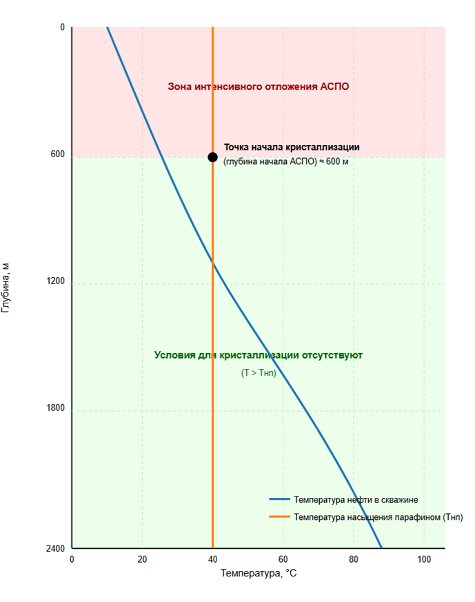

Программный комплекс на Python для прогнозирования асфальтосмолопарафиновых отложений (АСПО), автоматического выбора методов очистки и расчета экономической эффективности.
Перейти к анализуПредлагаемый программный комплекс позволяет отказаться от жестких графиков обработок в пользу точного прогнозирования. Это дает следующие преимущества:
Задайте базовые условия скважины — графики пересчитаются автоматически.
Расчётные показатели:

Программа выполняет пошаговый инженерный расчет: от ввода промысловых данных до выдачи готового экономического обоснования.
Программа считывает текущие параметры (дебит, обводненность, температуру, давление) и определяет физическую возможность применения каждого метода очистки.
Моделируется распределение температуры по стволу скважины. Находится глубина, на которой температура падает ниже точки насыщения парафинов (WAT).
Система оценивает доступные методы по 5 критериям (эффективность, стоимость, безопасность и др.) и выбирает оптимальный с учетом весов, заданных инженером.
Рассчитываются затраты на обработку, потери от простоя и дополнительная добыча. Формируется итоговый показатель NPV (чистая приведенная стоимость).
В программе реализована строгая проверка применимости методов. Если условия выходят за рамки, метод блокируется:
| Метод | Температура (T) | Парафин (P) |
|---|---|---|
| Механическая | -50 ... 150 °C | 0 ... 30 % |
| Химическая | 10 ... 120 °C | 3 ... 40 % |
| Тепловая | -80 ... 60 °C | 5 ... 40 % |
| Ультразвуковая | -100 ... 200 °C | 0 ... 50 % |
Полностью объектно-ориентированная архитектура на Python. Каждый модуль отвечает за свой этап расчета.
Обеспечивает импорт исторических данных из CSV/Excel (дебит, давление, температура). Включает алгоритмы фильтрации выбросов и проверки физической целостности данных перед расчетом.
Рассчитывает распределение температуры по стволу скважины с учетом теплообмена с окружающей средой. Определяет глубину, на которой температура падает ниже точки насыщения парафинов (WAT).
Ядро системы. Использует эмпирические и полуэмпирические модели для расчета кинетики осаждения парафинов. Прогнозирует рост толщины слоя на стенках НКТ и снижение пропускной способности.
Реализует алгоритм многокритериальной оптимизации (взвешенная оценка). Анализирует эффективность, стоимость, безопасность и скорость методов (химический, механический, тепловой) и выбирает лучший.
Интегрированная финансовая модель. Считает NPV, ROI и срок окупаемости. Сравнивает потери от простоя (недополученная прибыль) с затратами на превентивную обработку.
Автоматически генерирует графики (Matplotlib), формирует детальные отчеты в формате PDF и Excel. Поддерживает выгрузку рекомендаций для инженеров-технологов.
Пошаговая инструкция по работе с программным комплексом АСПО.НЕТ (консольная версия)
Для работы программы необходим установленный Python 3.10 или выше. Все зависимости описаны в файле requirements.txt.
Откройте терминал (командную строку) в папке с проектом и выполните команду для установки библиотек:
После успешной установки запустите главный файл:
В главном меню выберите пункт «1. Добавить новую скважину». Программа попросит ввести имя скважины и её физические параметры.
Пример ввода данных:
1.0 мм30 °C-20 °C45 м³/сут9.2 %160 атм73 ммЕсли вы оставите поле пустым и нажмёте Enter, программа подставит значение по умолчанию. После ввода всех параметров скважина появится в общем списке парка.
Выберите в меню «5. Запустить симуляцию». Программа смоделирует работу скважины на заданный период (по умолчанию — 365 дней).
В процессе симуляции программа будет автоматически:
После завершения вы увидите график роста толщины АСПО и журнал событий (когда и какая очистка была проведена).
Чтобы узнать, сколько денег сэкономит программа, выберите пункт «6. Запустить симуляцию с экономикой».
Вам будет предложено ввести объём инвестиций (по умолчанию 150 000 000 руб.). На основе этих данных программа рассчитает:
Пункт меню «20. Анализ МРП/МОП и эффективности» позволяет оценить, как ваш прогноз повлиял на межремонтный период.
Вы можете:
Этот блок доказывает, что ваша программа не просто «считает цифры», а реально продлевает жизнь скважине.
Когда вы закончите симуляцию, вам нужно будет предоставить отчет. Для этого выберите «17. Сгенерировать отчет».
Программа предложит два формата:
Также через меню «12. Экспорт данных» можно выгрузить все результаты симуляции в Excel или CSV для построения собственных графиков.
Сохраните файл, чтобы не потерять результаты при перезапуске программы (меню 9 — «Сохранить данные»).
Оставьте свои контакты для получения демо-доступа или консультации по внедрению.